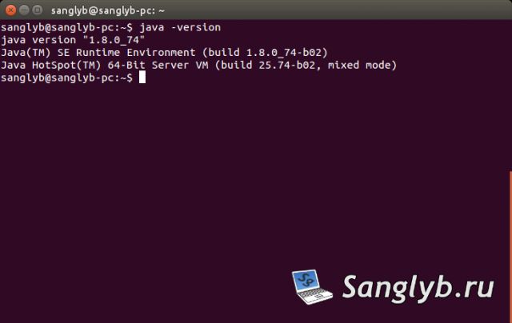

Как установить Java 8 JDK, JRE в Ubuntu
В данной статье будет показано как можно установить проприетарную JAVA 8 (JDK, JRE) в Ubuntu и Mint из репозиториев.
Добавим необходимые репозитории и установим Java:
|
2 3 |
sudo add-apt-repository ppa:webupd8team/java sudo apt-get update sudo apt-get install oracle-java8-installer |
Проверим установленную версию Java:
|
java -version |

Так же из этого репозитория можно установить переменные окружения:
|
sudo apt-get install oracle-java8-set-default |
Доступно видео по теме:
Tags:
Поделитесь статьей с друзьями в соц. сетях, возможно, она будет им полезна.
Если вам помогла статья, вы можете >>отблагодарить автора<<